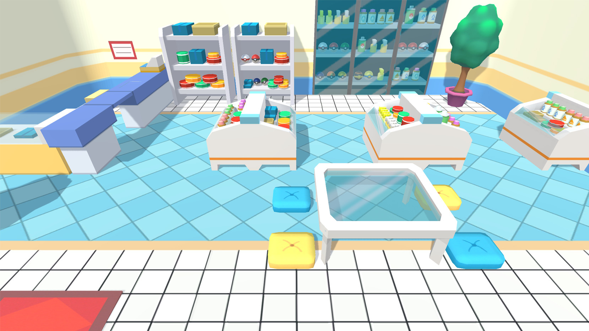

Store
The store or better know as the Poke Mart provide unique pokeballs at a lower cost. We've evaluated our fields to be at a rather fustrating point for new trainers so we give timer balls,heal balls, utlra ball,etc at twenty five percent of normal prices. The our heal items such as potions,edible items,and held onto items we sell are sold for fifty percent of the normal price.
Heal Station
Nobody's gonna charge you for healing ever. We have upgarded stations due to Profesor Oak's research so it takes about two-thirds the amount of time to heal your pokemon here.